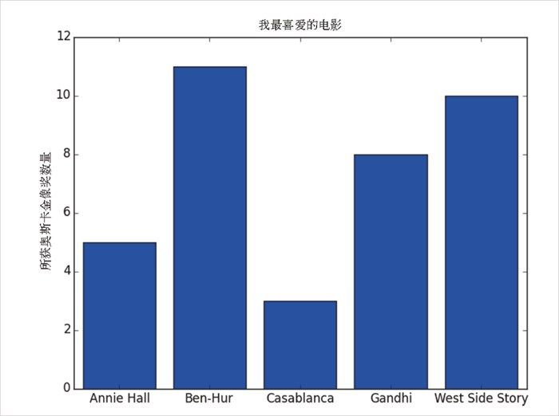
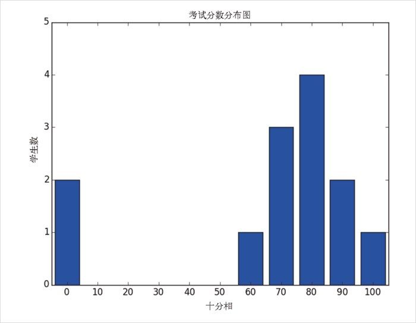
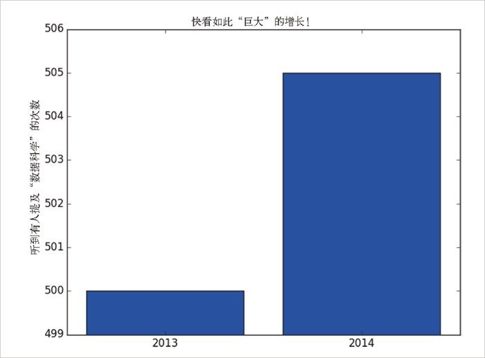
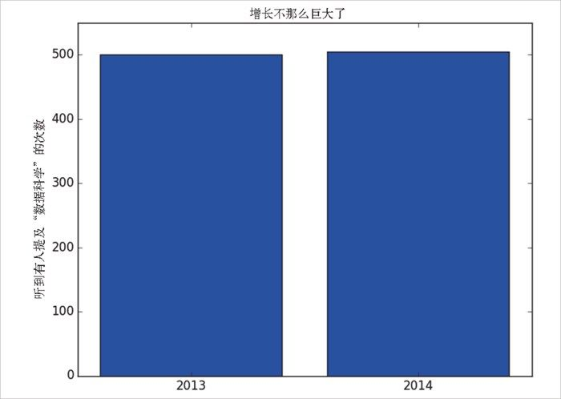

3.2 条形图
如果你想展示某些离散 的项目集合中的数量是如何变化的，可以使用条形图。比如，图 3-2 显示了几部电影所获得的奥斯卡金像奖的数目：
movies = ["Annie Hall", "Ben-Hur", "Casablanca", "Gandhi", "West Side Story"]
num_oscars = [5, 11, 3, 8, 10]
# 条形的默认宽度是0.8，因此我们对左侧坐标加上0.1
# 这样每个条形就被放置在中心了
xs = [i + 0.1 for i, _ in enumerate(movies)]
# 使用左侧x坐标[xs]和高度[num_oscars]画条形图
plt.bar(xs, num_oscars)
plt.ylabel("所获奥斯卡金像奖数量")
plt.title("我最喜爱的电影")
# 使用电影的名字标记x轴，位置在x轴上条形的中心
plt.xticks([i + 0.5 for i, _ in enumerate(movies)], movies)
plt.show()

图 3-2：一个简单的条形图
条形图也可以用来绘制拥有大量数值取值的变量直方图，以此来探索这些取值是如何分布 的，如图 3-3 所示。
grades = [83,95,91,87,70,0,85,82,100,67,73,77,0]
decile = lambda grade: grade // 10 * 10
histogram = Counter(decile(grade) for grade in grades)
plt.bar([x - 4 for x in histogram.keys()], # 每个条形向左侧移动4个单位
histogram.values(), # 给每个条形设置正确的高度
8) # 每个条形的宽度设置为8
plt.axis([-5, 105, 0, 5]) # x轴取值从-5到105
# y轴取值0到5
plt.xticks([10 * i for i in range(11)]) # x轴标记为0，10，...，100
plt.xlabel("十分相")
plt.ylabel("学生数")
plt.title("考试分数分布图")
plt.show()

图 3-3：为直方图使用条形图
plt.bar 的第三个参数指定了条形的宽度，在这里我们选择宽度为 8（这样就在各个条形之间留出了小的间隔，因为 x 轴是以刻度 10 做标记的），而且把每个条形向左移了 4 个宽度。这样一来，（比如说）“80”这个条形的左边在 76，而右边在 84，因此它的中心在 80。
对 plt.axis 的调用表明我们希望 x 轴的范围是 -5~105（以使“0”到“100”这些条形可以完全显示），并且 y 轴的范围应限定在 0~5 之间。对 plt.xticks 的调用把 x 轴的刻度放在 0、10、20、……、100 这些位置。
在使用 plt.axis() 时要谨慎。在创建条形图时，y 轴不从 0 开始是一种特别不好的形式，因为这很容易误导人（见图 3-4）：
mentions = [500, 505]
years = [2013, 2014]
plt.bar([2012.6, 2013.6], mentions, 0.8)
plt.xticks(years)
plt.ylabel("听到有人提及‘数据科学’的次数")
# 如果不这么做，matplotlib会把x轴的刻度标记为0和1
# 然后会在角上加上+2.013e3（糟糕的matplotlib操作！）
plt.ticklabel_format(useOffset=False)
# 这会误导y轴只显示500以上的部分
plt.axis([2012.5,2014.5,499,506])
plt.title("快看如此'巨大'的增长！")
plt.show()

图 3-4：一个有误导性 y 轴的条形图
在图 3-5 中，我们使用了一种更合理的轴，这样它看起来就不那么异常了：
plt.axis([2012.5,2014.5,0,550])
plt.title("增长不那么巨大了")
plt.show()

图 3-5：y 轴正常的同一个条形图